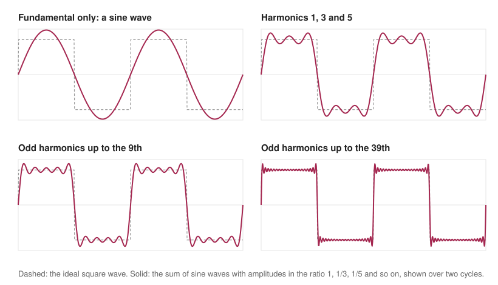
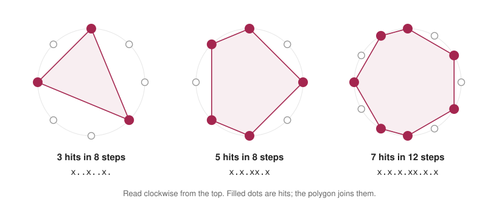

Can you make music using only mathematics?
Yes, and a surprising amount of music already is mathematics. A note is a pattern of numbers, a chord is a ratio, a rhythm is a way of dividing a cycle, and a melody can be written by a rule. This post builds a small piece of music from nothing but arithmetic, one idea at a time. The sound clips and figures on this page were produced by the short Python program shown in full below, so everything you hear and see can be reproduced.
1. A note is a pattern of numbers
A loudspeaker cone moves back and forth, and the air pressure follows it. A musical note is a regular, repeating motion, and the simplest repeating motion is the sine wave. If the cone is told to move as sin(2πft), the note has pitch f, measured in hertz, which is the number of cycles per second, and the height of the wave sets the loudness. A computer cannot give the cone a continuous instruction, so it gives a list of numbers, one for each tick of a clock. A CD uses 44,100 ticks a second. The clips here use 22,050 to keep the files small, and by the Nyquist–Shannon sampling theorem a list of numbers at s ticks a second can represent any frequency below s/2, which here is 11,025 Hz, more than enough for the notes in this post.
Two choices then fix every note. The first is the frequency itself: the A above middle C is 440 Hz, and every octave up doubles the frequency. The second is how the frequencies of the other notes are chosen, which is the subject of the next two sections.
2. Why some notes sound good together
When two sine waves have nearly the same frequency, the ear hears one note whose loudness rises and falls. Add a 440 Hz wave to a 444 Hz wave and the sum swells and fades four times a second, because the two waves drift in and out of step at a rate equal to the difference of their frequencies. These slow pulses are called beats, and they are the roughness heard in a pair of slightly mistuned notes.
Pairs of notes also sound smooth when their frequencies are in a simple ratio. An octave is 2 to 1, a perfect fifth is 3 to 2 and a major third is 5 to 4. With a simple ratio the two waves line up again after only a few cycles, so the combined wave repeats quickly and nothing beats. With a complicated ratio the combined wave takes a long time to repeat and the ear hears roughness. Real instruments do not play pure sine waves either. Each note contains extra frequencies at whole-number multiples of the main one, called harmonics, and when two notes are in a simple ratio many of their harmonics coincide exactly. Hermann von Helmholtz developed this account of consonance and dissonance in 1863.
3. The problem with twelve fifths
If simple ratios are the goal, one could tune an instrument by stacking perfect fifths. Start at a note, multiply its frequency by 3/2, and halve it whenever it passes an octave so that it stays in range. After twelve steps you have been through all twelve notes of the scale and ought to arrive back where you began, seven octaves higher. You do not. Twelve fifths multiply the frequency by (3/2)12, which is about 129.75, while seven octaves multiply it by 27 = 128. The ratio between them, 531441/524288 or about 1.0136, is called the Pythagorean comma. It is roughly 23.5 cents, where a cent is one hundredth of a semitone, so an octave is 1200 cents. The circle of tuning does not close.
Musicians have dealt with this gap in many ways over the centuries. The solution used by most modern keyboards is equal temperament, which hides the gap by splitting the octave into twelve identical steps. Each semitone multiplies the frequency by 21/12, about 1.05946, so twelve of them make exactly 2. The note n semitones above the A at 440 Hz therefore has frequency 440 × 2n/12, and middle C, nine semitones below that A, comes out at 261.63 Hz. The price is that no interval except the octave is exactly a simple ratio any more. Table 1 shows how close each one gets.
| Interval | Semitones | Simple ratio | Equal-tempered ratio | Difference (cents) |
|---|---|---|---|---|
| Octave | 12 | 2/1 = 2.0000 | 2.0000 | 0.00 |
| Perfect fifth | 7 | 3/2 = 1.5000 | 1.4983 | −1.96 |
| Perfect fourth | 5 | 4/3 = 1.3333 | 1.3348 | +1.96 |
| Major third | 4 | 5/4 = 1.2500 | 1.2599 | +13.69 |
| Minor third | 3 | 6/5 = 1.2000 | 1.1892 | −15.64 |
| Major sixth | 9 | 5/3 = 1.6667 | 1.6818 | +15.64 |
The fifth and the fourth are off by about 2 cents, far too little to hear in most settings. The thirds and the sixth are off by 14 to 16 cents, enough that a trained ear hears a piano’s major third as slightly sharp and faintly beating, compared with a pure 5 to 4 third. In exchange, every key on the keyboard sounds equally acceptable. That compromise is a piece of mathematics that most people use every day without noticing.
4. Timbre: building a sound from sine waves
Why does a flute sound different from a violin playing the same note? The answer is the mix of harmonics. In 1822 Joseph Fourier showed that any repeating wave can be written as a sum of sine waves whose frequencies are whole-number multiples of the lowest one, and the recipe, meaning how strong each harmonic is, sets the timbre. This gives a way to build sounds from nothing: choose the harmonics and add them up, which is called additive synthesis.
Figure 1 shows the idea with the classic example. A square wave, which jumps between two levels, is made from the odd harmonics only, with strengths 1, 1/3, 1/5 and so on. A sine wave alone is a smooth curve. Adding the third and fifth harmonics already squares off the corners, and by the 39th harmonic the sum is hard to tell from a perfect square wave apart from a ripple at each edge, which never quite disappears and is known as the Gibbs phenomenon.

A sawtooth wave uses all the harmonics, with strengths 1, 1/2, 1/3 and so on. Audio 2 plays the same note three times with three different recipes: a sine wave, a square wave and a sawtooth. The pitch stays the same and only the mix changes, yet the character changes from soft and round to hollow to bright and buzzy.
5. Rhythm from Euclid’s algorithm
Rhythm is arithmetic too. Suppose a cycle has twelve beats and you want to place seven hits on them as evenly as possible. Perfectly equal spacing is impossible, because 7 does not divide 12, so the gaps will be of two kinds, one beat and two beats, and the question is how to arrange them. In 2005 Godfried Toussaint noticed that the answer comes from Euclid’s algorithm for the greatest common divisor, in a form that Eric Bjorklund had described for a different purpose, the timing of a particle accelerator, and that the patterns it produces include many traditional rhythms. Seven hits in twelve steps gives a pattern found in West African bell music, and three hits in eight steps is a rhythm heard widely in Cuban music.

The program below does not need the full algorithm. A single line, (i * hits) % steps < hits evaluated for each step i, spreads the hits as evenly as possible and gives the same patterns as Bjorklund’s method up to a rotation, an equivalence proved by Erik Demaine and colleagues in 2009.
6. Letting rules and chance choose the notes
Melody can be generated too. Rules and dice have been used for centuries: a musical dice game published shortly after Mozart’s death and attributed to him assembled waltzes by rolling dice to choose between prewritten bars. In the 1950s Lejaren Hiller and Leonard Isaacson used a computer at the University of Illinois to write the Illiac Suite, generally regarded as the first score composed by an electronic computer, by generating notes at random and keeping only those that obeyed rules of counterpoint. At about the same time Iannis Xenakis was building pieces from probability theory, and he described his methods in Formalized Music.
The simplest version of the idea is a random walk on a scale. Start somewhere and, at each step, move up or down by a small amount, with small moves likely and big leaps rare. The result wanders but stays smooth, because real melodies mostly move by steps. Restricting the notes to the minor pentatonic scale, five notes to the octave with no semitone steps, removes the most obvious clashes. This is a Markov chain, in which the next note depends only on the current one. Combined with the Euclidean rhythm, it gives Audio 3, a piece 9.6 seconds long. The random numbers come from a seeded generator, so that runs are repeatable.
7. The whole program
The first block holds the building blocks. freq turns a note number into a frequency, tone adds up sine waves with a short attack and a smooth decay so that notes do not click, euclid places the hits of a rhythm, markov_melody takes the random walk, and save writes the numbers to a sound file. It needs only NumPy and the standard library.
SR = 22050 # samples per second
def freq(midi): # equal temperament: A4 = MIDI note 69 = 440 Hz
return 440.0 * 2 ** ((midi - 69) / 12)
def tone(f, seconds, harmonics, decay=3.0):
"""Additive synthesis: a sum of sine waves at whole-number multiples of f."""
t = np.arange(int(SR * seconds)) / SR
y = sum(a * np.sin(2 * np.pi * f * k * t) for k, a in harmonics)
return y * np.minimum(t / 0.01, 1) * np.exp(-decay * t / seconds) # quick attack, smooth decay
def euclid(hits, steps): # spread `hits` as evenly as possible over `steps`
return [(i * hits) % steps < hits for i in range(steps)]
def markov_melody(scale, length, rng):
"""A random walk on a scale: small steps are likely, big leaps are rare."""
i, notes = len(scale) // 2, []
for _ in range(length):
notes.append(scale[i])
step = rng.choice([-2, -1, 0, 1, 2], p=[0.15, 0.3, 0.1, 0.3, 0.15])
i = min(max(i + step, 0), len(scale) - 1)
return notes
def save(path, y):
pcm = (0.8 * 32767 * y / np.max(np.abs(y))).astype("<i2")
with wave.open(path, "wb") as w:
w.setnchannels(1); w.setsampwidth(2); w.setframerate(SR); w.writeframes(pcm.tobytes())
The second block is the piece itself: a scale, a rhythm, a melody and a loop that drops each note into the right place in a long list of samples.
scale = [57, 60, 62, 64, 67, 69, 72, 74, 76, 79] # A minor pentatonic over two octaves
rhythm = euclid(7, 12) * 4 # seven hits in twelve steps, four bars
rng = np.random.default_rng(7)
melody = markov_melody(scale, sum(rhythm), rng)
step = 0.18 # seconds per step
piece = np.zeros(int(SR * (len(rhythm) * step + 1.0)))
voice = [(k, 1 / k) for k in range(1, 9)] # eight harmonics, each weaker than the last
notes = iter(melody)
for i, hit in enumerate(rhythm):
if hit:
y = tone(freq(next(notes)), 0.9, voice)
s = int(SR * i * step)
piece[s:s + len(y)] += y
save("melody.wav", piece)
The third block makes Audio 1 and Audio 2 with the same building blocks. I converted the three WAV files to MP3 with ffmpeg to keep them small.
# clip 1: beats. Two sine waves 4 Hz apart
t = np.arange(int(SR * 6)) / SR
beats = (np.sin(2 * np.pi * 440 * t) + np.sin(2 * np.pi * 444 * t)) * np.minimum(t / 0.05, 1) * np.minimum((6 - t) / 0.05, 1)
save("beats.wav", beats)
# clip 2: timbre. Same note (A3), three recipes of harmonics
sine = [(1, 1.0)]
square = [(k, 1 / k) for k in range(1, 40, 2)]
saw = [(k, 1 / k) for k in range(1, 40)]
timbre = np.concatenate([np.pad(tone(220, 1.6, h, decay=0.6), (0, int(SR * 0.15))) for h in (sine, square, saw)])
save("timbre.wav", timbre)
8. Why this matters for machine learning
Music is a good test for generative models. It is a sequence with structure at several scales: a note depends on the few notes before it, a phrase on the bars before that, and a whole piece on its opening theme. Neural models now handle this in two ways. Symbolic models such as the Music Transformer work on note events and use attention to keep track of repeated themes over long distances. Audio models such as WaveNet, Jukebox, MusicLM and MusicGen generate the sound itself, either sample by sample or through compressed audio codes, which is the same kind of list of numbers that the program above builds by hand.
The hard part is evaluation. A random walk like the one above is easy to check for “is every note in the scale” and impossible to check for “is it good”. Researchers use listening tests and automatic measures such as the Fréchet Audio Distance, which compares the statistics of generated audio with those of real recordings, but each of them misses something. It is the same difficulty that appears when evaluating language models and agents: a measure that is easy to compute rarely captures what a person actually values, and much of the real work lies in deciding what to measure.
What to take away
Sound is a list of numbers, and pitch is multiplication, so tuning is a question about which ratios to keep. Harmony comes from simple ratios, and the price of playing in every key is the small errors of equal temperament. Timbre is a recipe of harmonics, and rhythm is a way of dividing a cycle evenly. A few lines of code can combine all of these into music, and they also show where the mathematics stops: rules can produce notes that fit, but deciding which music is worth hearing is still a human judgement.
Further reading
Helmholtz, H. (1863). Die Lehre von den Tonempfindungen als physiologische Grundlage für die Theorie der Musik. Vieweg. English translation: On the Sensations of Tone (1875).
Fourier, J. (1822). Théorie analytique de la chaleur. Firmin Didot.
Loy, G. (2006). Musimathics: The Mathematical Foundations of Music, Volume 1. MIT Press.
Roads, C. (1996). The Computer Music Tutorial. MIT Press.
Bjorklund, E. (2003). The theory of rep-rate pattern generation in the SNS timing system. Technical report, Los Alamos National Laboratory.
Toussaint, G. (2005). The Euclidean algorithm generates traditional musical rhythms. Proceedings of BRIDGES: Mathematical Connections in Art, Music and Science.
Demaine, E. D., Gomez-Martin, F., Meijer, H., Rappaport, D., Taslakian, P., Toussaint, G. T., Winograd, T. and Wood, D. R. (2009). The distance geometry of music. Computational Geometry, 42(5), 429–454.
Hiller, L. A. and Isaacson, L. M. (1959). Experimental Music: Composition with an Electronic Computer. McGraw-Hill.
Xenakis, I. (1971). Formalized Music: Thought and Mathematics in Composition. Indiana University Press.
Huang, C.-Z. A. et al. (2019). Music Transformer: generating music with long-term structure. ICLR.
van den Oord, A. et al. (2016). WaveNet: a generative model for raw audio. arXiv:1609.03499.
Dhariwal, P. et al. (2020). Jukebox: a generative model for music. arXiv:2005.00341.
Agostinelli, A. et al. (2023). MusicLM: generating music from text. arXiv:2301.11325.
Copet, J. et al. (2023). Simple and controllable music generation. NeurIPS.
Kilgour, K., Zuluaga, M., Roblek, D. and Sharifi, M. (2019). Fréchet Audio Distance: a reference-free metric for evaluating music enhancement algorithms. Interspeech.
Appendix: credits
Figures 1 and 2 and the three audio clips are computed by the code on this page, and no outside images or recordings are used. The numbers in the text come from the same calculations. I checked each clip by analysis: the beat rate, the strength of each harmonic and the pitch of every one of the 28 melody notes match what the program intended.